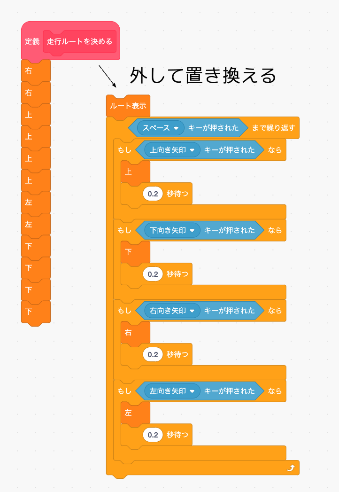
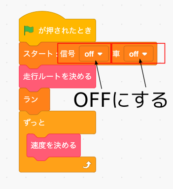
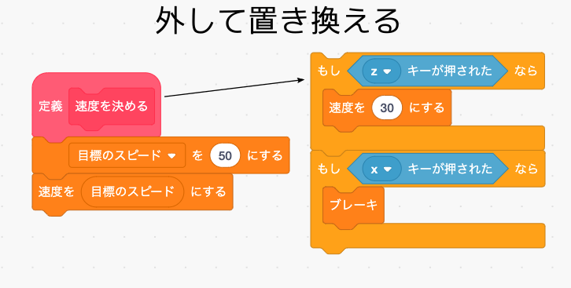

マニュアルで車を動かせるようになったので、次はルートの自動決定、といきたいところですが、ルートの自動決定はかなり難しいプログラミングが必要なので、まず先に速度の自動決定からつくってみましょう。
ところで実行するたびにいちいちルートをマニュアルで入力するのは面倒なので、テスト用のルートをあらかじめ決めておきます。 折角つくったのにもったいない気もしますが、「走行ルートを決める」ブロックの中身を次の図の左側のように置き換えて下さい。 すると左まわりで同じ場所をぐるぐる回るようなルートになります。
なお外した前のプロクラムは後で使いますので消さないように気を付けて下さい。
さらにテスト中に信号や他の車がいると邪魔ですので、メインプログラムの「スタート」ブロックの信号と車の設定をOFFにします。
ではとりあえず前進させるプログラムをつくってみましょう。 まず「変数」メニューで「目標のスピード」という変数ブロックを作ります。
次に「速度を決める」ブロックの中身を次のように置き換えます。
では「緑の旗」ボタンを押してテストしてみましょう。 多分とんでもないことが起きると思います。
正しく(？)動いたら「ストップ」ボタンを押してタイトル画面に戻って下さい(シミュレータ画面は動作が重いのでプログラミングはタイトル画面でした方が良いです)。